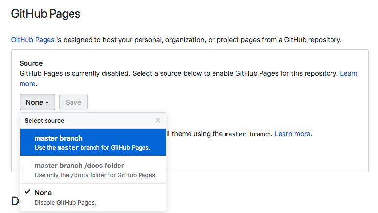
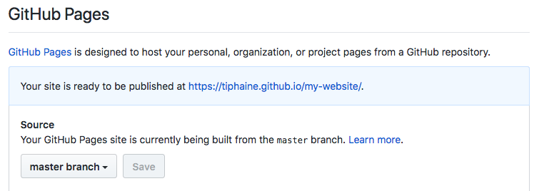
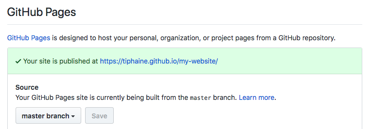
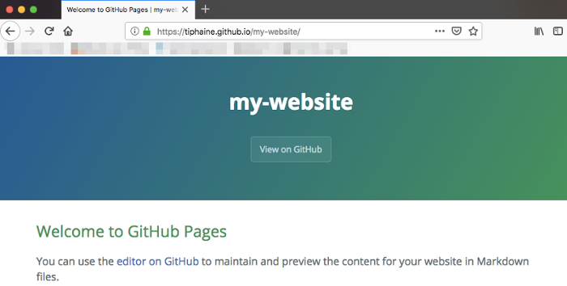

December 11, 2018 Jekyll Core Post TLDR
Jekyll is static site generator written in Ruby by Tom Preston-Werner. I used it for projects like Prévisecours and realized that static pages and the Markdown syntax would allow me to blog more about my technical findings. So, I decided to move my homepage from Wordpress to Jekyll on Github pages with the Sustain theme.
Some would prefer Hugo but I’m more into Jekyll right now because of the Github compatibility and the available themes.
One of Jekyll’s main issue is installation, so here is how I made Jekyll work on MAC OS High Sierra.
Jekyll installation
- Open a Terminal (Applications > Utilities > Terminal)

-
Install xcode if you don’t have it yet
$ xcode-select --install -
Install Homebrew (a free and open-source software package management system for macOS)
$ /usr/bin/ruby -e "$(curl -fsSL https://raw.githubusercontent.com/Homebrew/install/master/install)" -
Run this script to install
ruby-buildandrbenvpackages (I adapted it from @DirtyF’s to get the latestrbenvversion)$ bash setup-rbenv.sh
#!/bin/bash
set -ex
brew update
brew install rbenv ruby-build
rbenv install 2.5.3
rbenv global 2.5.3
ruby -v
gem install jekyll bundler
rbenv rehash
if ! type rbenv | grep function; then
echo 'if which rbenv > /dev/null; then eval "$(rbenv init -)"; fi' >> ~/.bash_profile
fi
set +x
echo "Done! Close and reopen your terminal"
Script code: setup-rbenv.sh
-
After, check your ruby install
$ ruby -v ruby 2.5.3p105 (2018-10-18 revision 65156) [x86_64-darwin17] -
Install bundler and jekyll gems
$ gem install jekyll bundler -
Check your jekyll version
$ jekyll -v jekyll 3.8.5
You can now use jekyll on your local system.
Run Jekyll to generate your static website
-
Choose your own Jekyll theme and clone/unzip it on your computer (for example in the
my-websitedirectory):$ mkdir my-website $ cd my-website $ unzip chosen-jekyll-theme.zip $ bundle exec jekyll serve -
Your new local version of your new website should be up and running at this adress (copy paste it on your favorite browser):
http://localhost:4000.
You can now customize and create content for your new site.
Host it on Github pages
-
To host your newly created website on Github, you just have to push the directory as a new repos using your favorite Github application our CLI.
-
Go online on the Github repo to the Settings tab

- Go to the section below

- Select the
master branchand Save

- You should get this

- Within a few minutes, reload the page and your site should be published

- Now you have your new page online ! Enjoy !

Personal note: I found this feature to be amazing for quickly putting up documentation about new projects and to spread them quickly around !